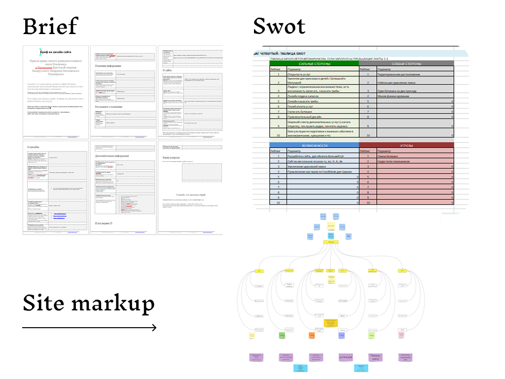
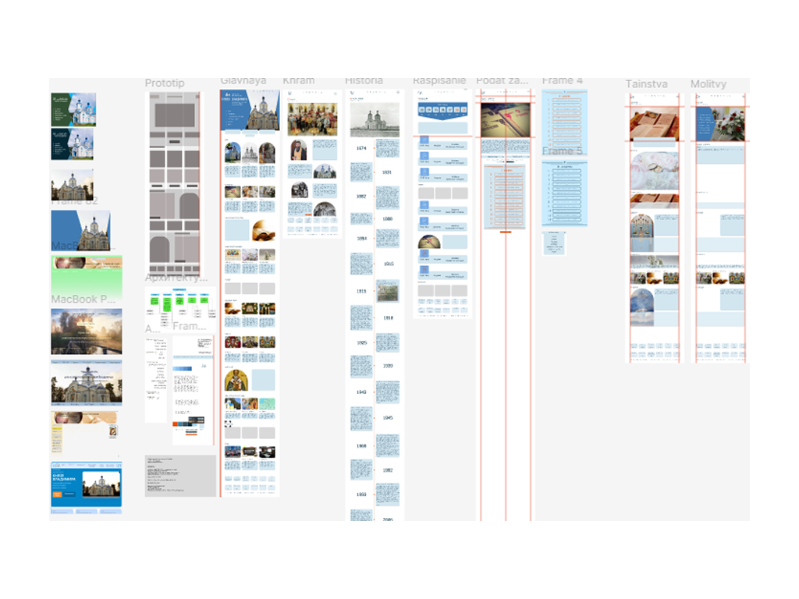
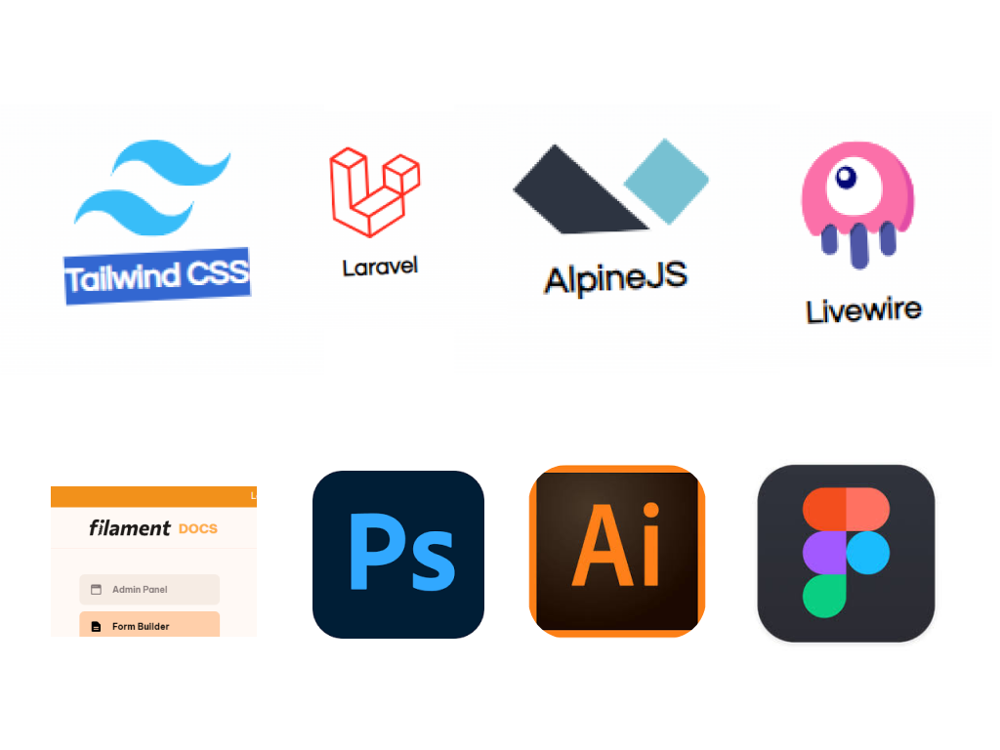

Laravel · Tailwind CSS
Church of Saint Prince Vladimir
A parish website with schedules, news, and community services.

Brief
The project is a website designed for the Church of Saint Prince Vladimir. Its main goal was to provide parishioners and visitors with easy access to information about the church, worship schedule, events, and spiritual life. The key objective was to create a calm, clear, and user-friendly interface that reflects spiritual values and the atmosphere of an Orthodox church. The target audience includes parishioners of all ages, families, elderly users, and people visiting the church for the first time.

Sketches / Design
During the design phase, several interface concepts were created, the site structure and user flows were carefully planned. The final design uses a restrained color palette with subtle accents to highlight important elements. Special attention was paid to typography, visual hierarchy, and the balance between modern web design and traditional aesthetics.

Tools & Technologies
The project was built using modern design and development tools: Figma for interface design, Photoshop and Illustrator for graphic assets, Tailwind CSS for fast and responsive layout, Laravel and PHP for backend logic and content management, and Alpine.js for lightweight interactivity.

Responsiveness
The website is fully responsive and optimized for mobile devices, tablets, and desktops. Thanks to Tailwind CSS and a well-structured layout, the interface remains clear and accessible on any screen size, which is especially important for elderly users and mobile access.

Final Result
The final outcome is a functional and visually balanced website that simplifies interaction between the church and its community. The layout brings navigation, service information, and community content together while preserving a respectful atmosphere.